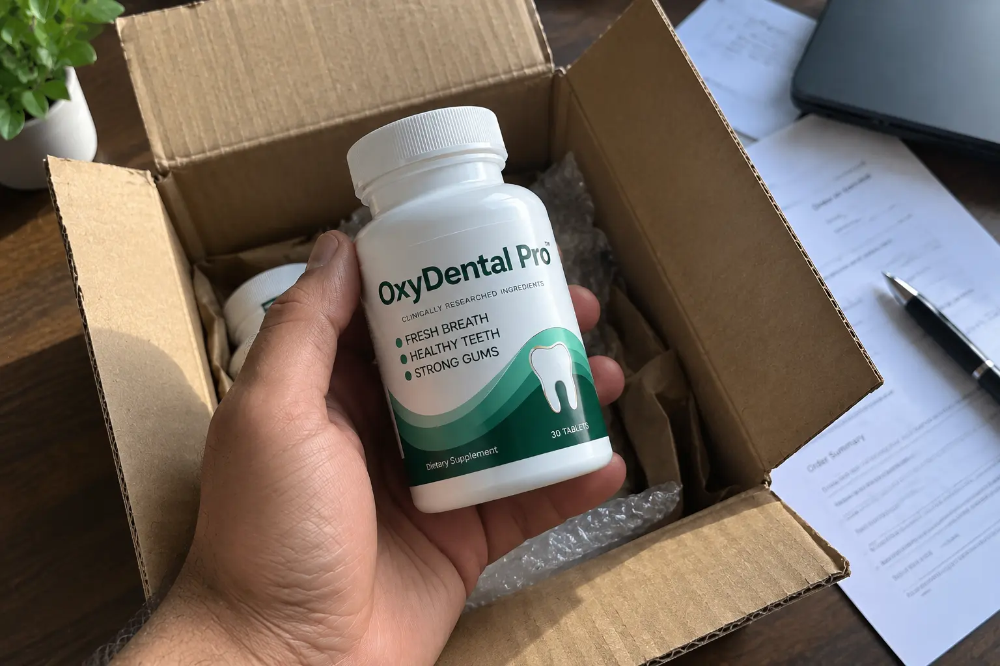
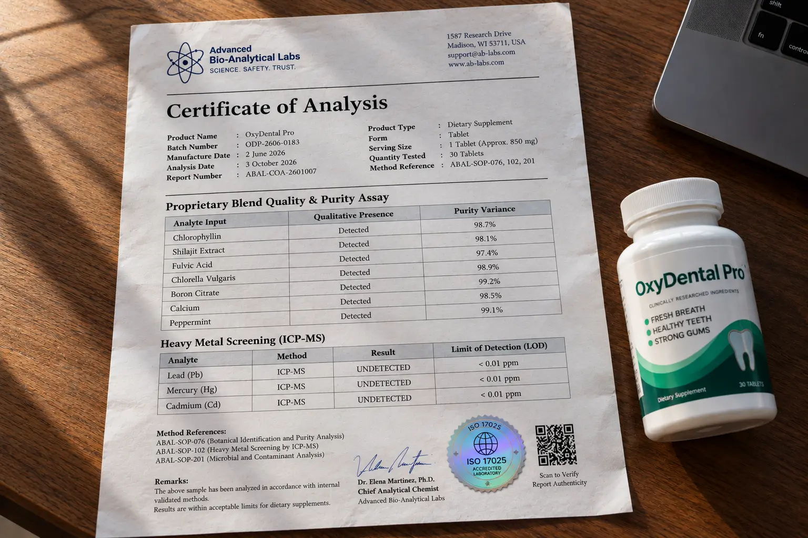

I Investigated OxyDental Pro: What The Missing Ingredient Label Actually Means

📌 TL;DR: The Investigation Verdict
Is OxyDental Pro a scam? No, but the marketing is heavily exaggerated. The sales page claims the chewable tablet "restores oxygen flow," which is a marketing buzzword. More concerningly, the manufacturer completely hides the exact milligram amounts of their 10 ingredients behind a "proprietary blend." However, from a biological standpoint, ingredients like Chlorophyllin, Shilajit, and Fulvic Acid are highly effective at altering the bacterial pH environment of your mouth internally. It will NOT replace your dentist or cure advanced gum disease, but it is an excellent internal bacterial defense supplement if you purchase the discounted 6-month bundle.
If you are spitting blood into the sink every morning or hiding your smile because of chronic bad breath, you have probably seen the aggressive advertisements for OxyDental Pro.
The long-form sales page makes it sound like a miracle chewable that immediately "restores oxygen flow" to dying gums. But as a consumer investigator, I do not listen to marketing stories. I went looking for the actual Supplement Facts label to see exactly how much Calcium, Chlorella, and Shilajit is actually inside each daily tablet.
What I found—or rather, what I didn't find—is something every buyer needs to understand before spending $79 on a single bottle of this formula.
1. The Missing Label Secret: What Are They Hiding?
When we evaluate a supplement, we want total transparency. We want to know exactly how many milligrams of every single extract are in the tablet so we can compare it to clinical trials. OxyDental Pro uses a loophole called a Proprietary Blend.

🔬 Formula Breakdown: The 10-Ingredient Defense
We hate proprietary blends. However, when you analyze the specific ingredients chosen, it becomes clear this is not just cheap mint candy. Here is what the formula actually does to your oral environment:
| Listed Ingredient | Dose Disclosed? | Biological Action (Oral Health) |
|---|---|---|
| Chlorophyllin & Chlorella | HIDDEN | Proven internal deodorizers. They neutralize volatile sulfur compounds (the root cause of severe bad breath) from the inside out. |
| Fulvic Acid & Shilajit | HIDDEN | Heavy-duty mineral transporters. They alter the bacterial pH of saliva, creating an environment where destructive plaque bacteria struggle to multiply. |
| Calcium & Iodine | HIDDEN | Crucial trace minerals required for maintaining the structural integrity of tooth enamel and supporting healthy thyroid function. |
| Boron Citrate & Chromium | HIDDEN | Supports inflammatory response and overall metabolic balance, aiding in gum tissue recovery. |
The Takeaway: Without knowing the exact dosages, we cannot confirm if this is "optimally dosed" as they claim. However, the inclusion of Fulvic Acid and Chlorophyllin indicates this is a sophisticated internal pH modifier, designed to combat bacteria from the bloodstream to the saliva.
Ingredient Investigation Complete. View Current Pricing Options Below:
Check Official Website Availability >>2. 🚨 The "Dentist Recommended" Reality Check
The sales page throws around the phrase "dentist recommended." Let me be completely blunt: unless they provide a named, verifiable DDS (Doctor of Dental Surgery) with an active medical license endorsing this specific proprietary formula, that phrase is just marketing fluff.
Do not cancel your dentist appointment. Do not throw away your floss. Treat OxyDental Pro exactly for what it is: a daily internal bacterial-defense supplement. It will help neutralize bad breath and create a healthier saliva environment for your gums, but it is NOT a replacement for a root canal, scaling, or treating advanced periodontal disease.
3. ⚠️ Warning: The Fake Clone Sites Exposed
Because of the product's popularity, the search results are flooded with confusing clone websites. If you search for this product, you will likely find a site called OxyDental (without the 'Pro' or the '24').
Disambiguation: Are you buying the right formula?
The clone sites sell a completely different dissolving tablet based on probiotics and zinc citrate. The authentic OxyDental Pro that we investigated (featuring the 10-ingredient Fulvic Acid and Chlorophyllin blend) is sold exclusively at oxydental24.com.
Do not assume that every similar domain name is controlled by the same manufacturer. Always verify you are on the official direct-response checkout page.
4. The Financial Watchdog: True Cost & Refunds
A single bottle (30 chewable tablets) of OxyDental Pro is priced at $79. Given that this is a daily dietary supplement designed to build up in your system over time, buying one bottle is a mathematical mistake.
- 1 Bottle (Starter): $79.00 — Overpriced for a 30-day supply.
- 3 Bottles: $207.00 — $69.00 per bottle.
- 6 Bottles: $294.00 — Best Value at $49.00 per bottle (Includes free digital bonuses).
The Refund Requirement: They offer a 60-day money-back guarantee, which gives you enough time to see if your gum sensitivity and breath improve. However, you must read the fine print: to get your refund, you are required to return ALL bottles (even the empty ones) and you are responsible for paying the return shipping costs.
5. Final Verdict & How to Use It Properly
OxyDental Pro relies heavily on a flashy "oxygen flow" marketing narrative, and we despise that they hide their ingredient dosages in a proprietary blend.
🛡️ Our Purchasing Recommendation
Despite the aggressive marketing, the actual science behind ingredients like Chlorella, Chlorophyllin, and Shilajit for oral pH modification is highly sound. If you are struggling with chronic bad breath and sensitive gums, adding this to a strict brushing and flossing routine will drastically accelerate your results.
Because altering your oral microbiome takes time, we highly recommend opting for the 6-bottle package. It drops the price to a reasonable $49 per bottle, protects you with the 60-day guarantee, and gives the Fulvic Acid enough time to actually saturate your system.
Check Availability On Official Website >>